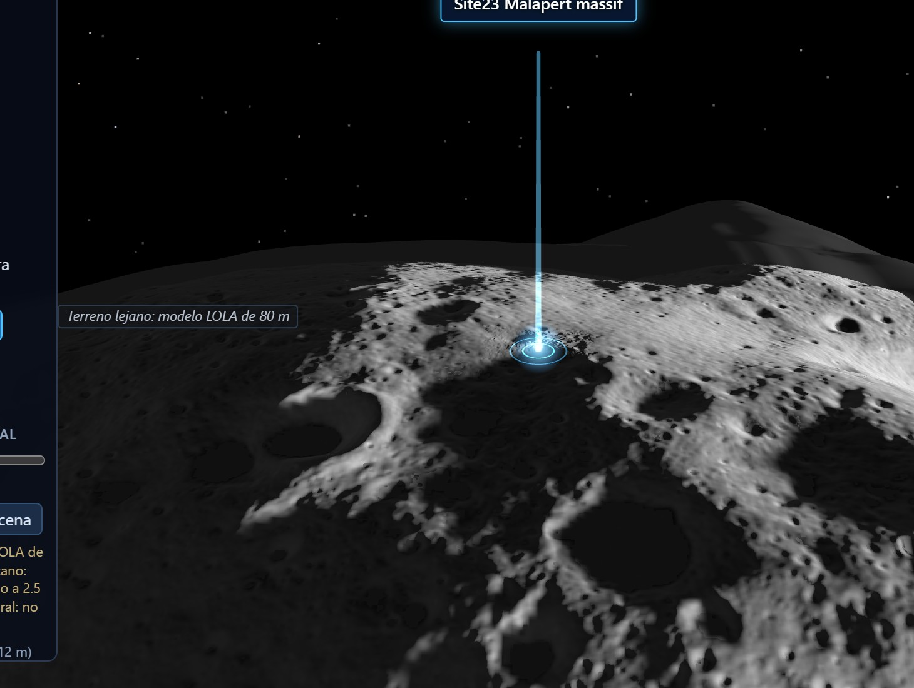
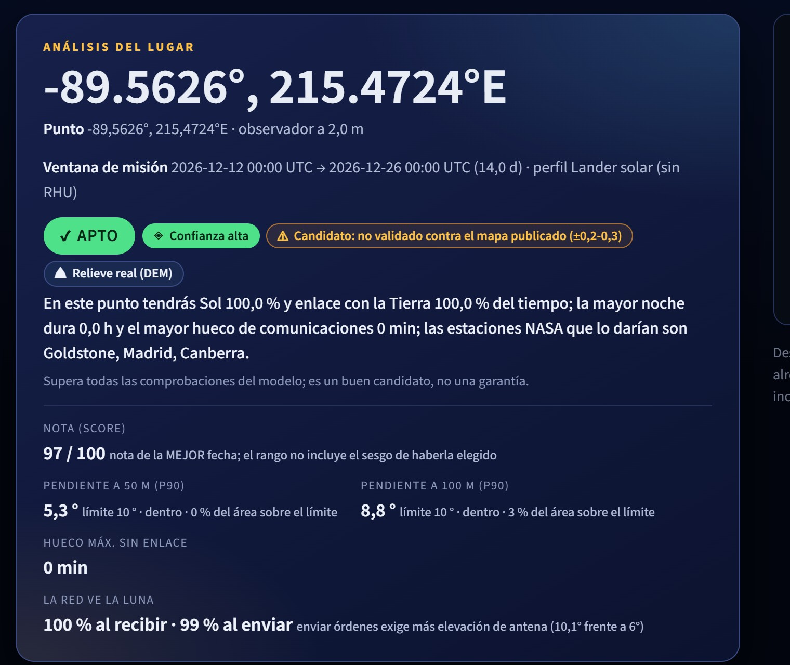
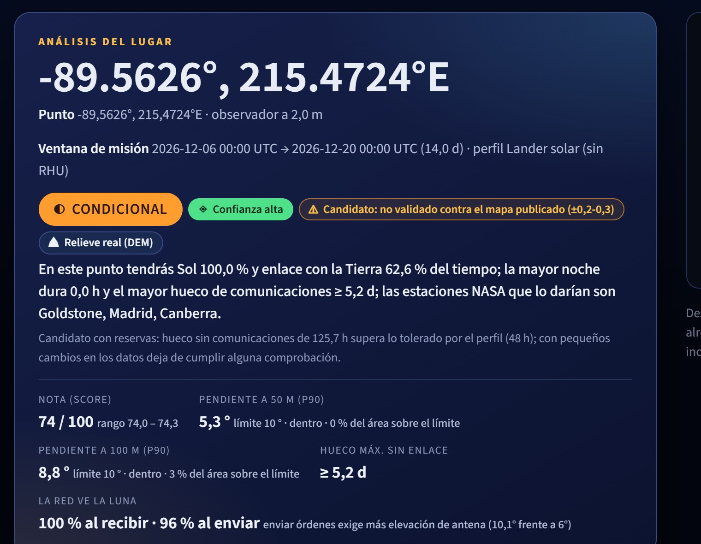
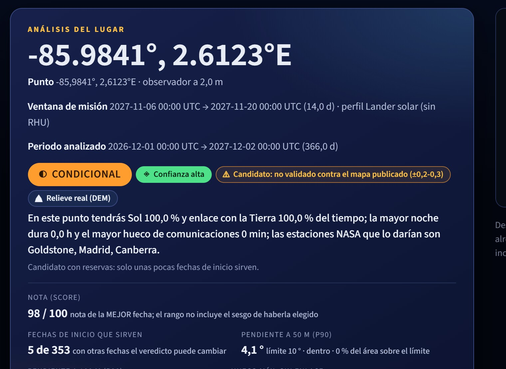
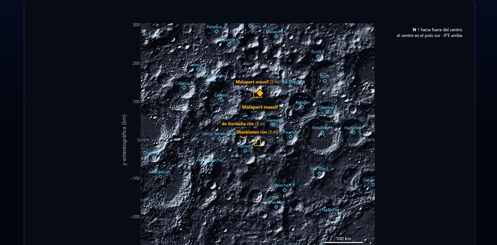
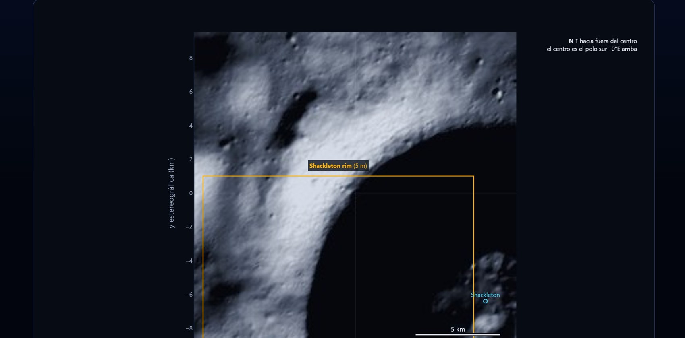
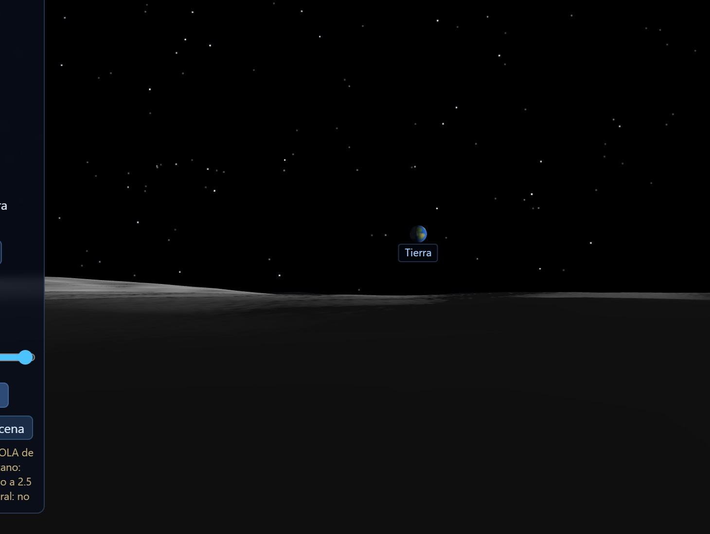
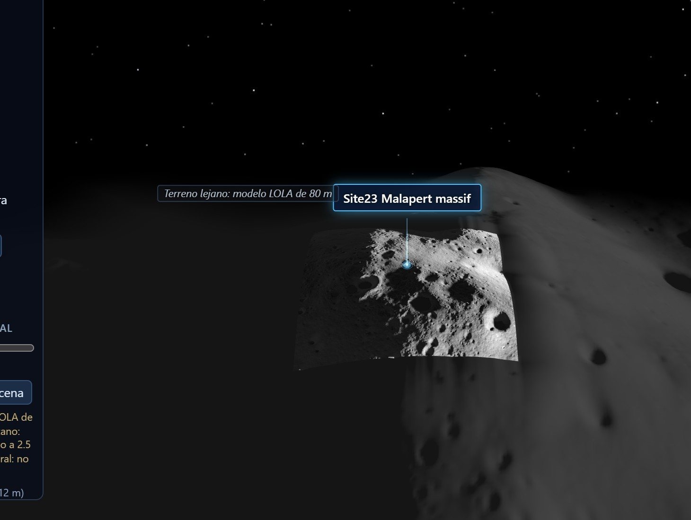
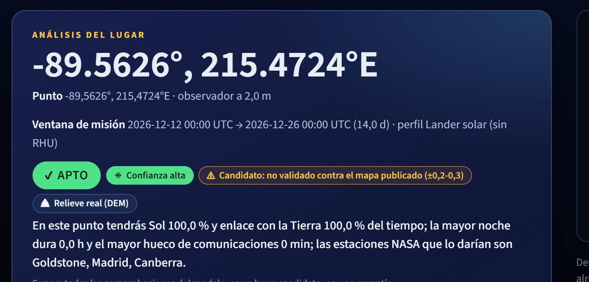

Does this spot see the Sun,
see the Earth,
and could it talk to it?
Any point near the lunar south pole · any date



Average light hides the real constraint. LUNARIS tells planners when a site is usable, not just where.





Candidates, not certified sites. They do not match the published illumination map to within ±0.2–0.3.
Declared limits. Coarse far-field error shown on screen; panel temperature range 40–250 K; 3D is not photorealistic.
997 automated tests. Sun/Earth geometry cross-checked against JPL Horizons.
A tool planners can trust tells them where it is unsure.
pip install -r requirements.txt · streamlit run app.pyLOLA DEMs (PGDA 78 & 90) · NAIF SPICE · JPL Horizons · DSN 810-005 · LROC NAC & SDEM · Diviner · published illumination maps · USGS Gazetteer · three.js · Streamlit
LUNARIS — the right place, at the right time, with data.